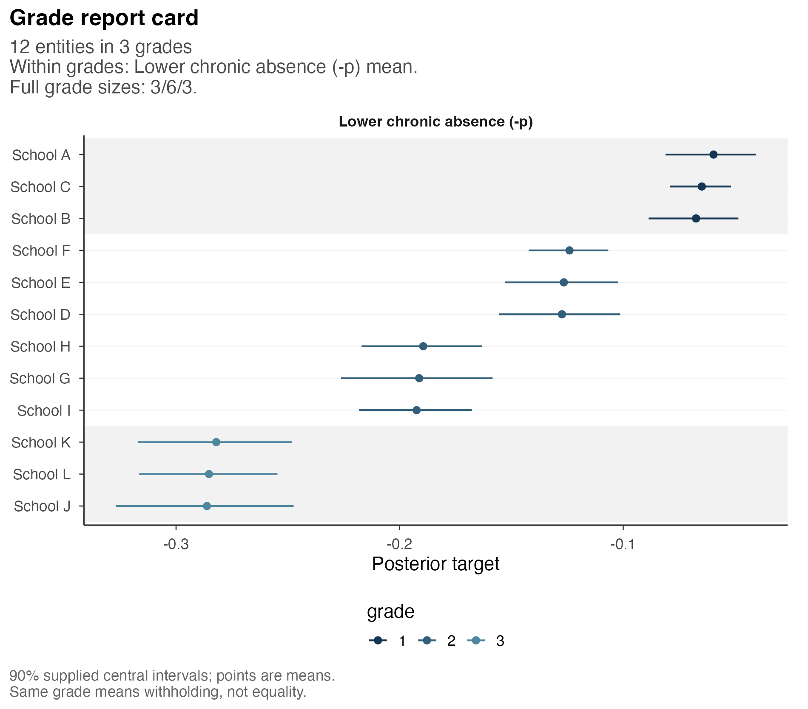
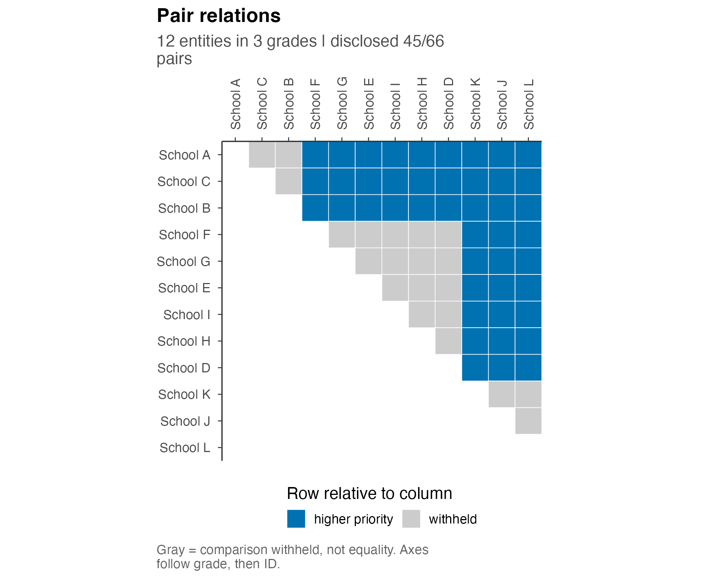
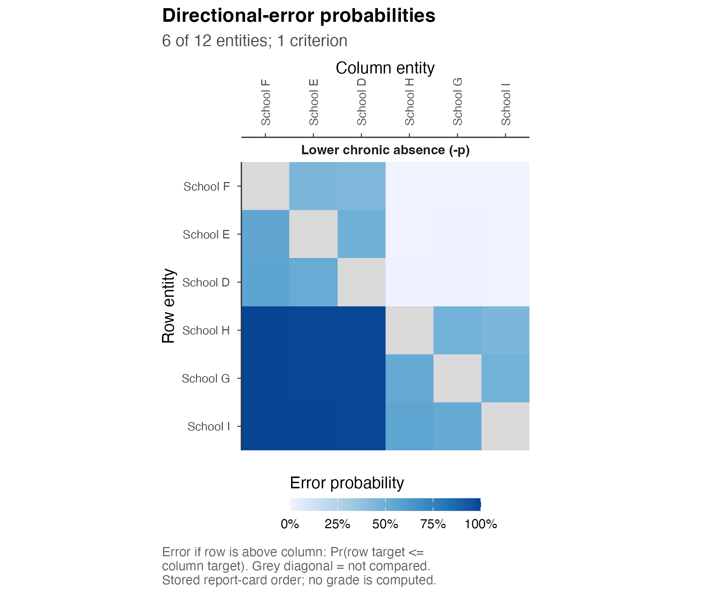

Comparing chronic absence across California schools
Source:vignettes/a2-cde-accountability.Rmd
a2-cde-accountability.RmdSchool accountability reports often order schools by their observed
absence rates. Such an ordering requires directional comparisons even
when nearby rates are difficult to distinguish. We use chronic
absenteeism to illustrate a one-criterion analysis in which
postrank assigns schools to ordered grades and withholds
comparisons within grades.
The target is the current chronic-absence probability, with lower values receiving higher priority. This target concerns neither a school’s causal effect on attendance nor the California School Dashboard’s combination of current level and change. Both would require additional information.
The posterior input and optimized grading were prepared in advance. The article reads these results and evaluates fixed reports, without refitting a model or executing an optimizer during rendering. An optional call is provided for recomputing the small example.
Schools, observations and posterior distribution
The source study uses the frozen 2026 Dashboard publication for school year 2025-26. Its chronic-absence frame contains 5,834 elementary-type, non-alternative schools with usable all-students counts and current-year denominators of at least 30; charter schools are included. This is the study’s eligible frame, rather than every school in California. The denominator is the indicator’s eligible student-school count, so summing it across schools need not count unique students.
The bundled example contains 12 schools, selected deterministically from the cross-classification of 4 observed-rate rank groups and 3 denominator rank groups, with one school per cell. This selection distributes the example across the source frame but does not constitute a representative sample for estimating statewide prevalence.
The source is the CDE
chronic-absenteeism download collection. The compact CDE-derived
input preserves source attribution and documented transformations. The
dataset help, ?pr_case_cde, retains the source details and
links to the CDE
copyright statement. The installed DATA-NOTICE distinguishes
historical preparation records from the current distribution scope.
library(postrank)
case <- pr_case_cde
input <- case$input
schools <- case$units
# Short display names; the original CDS identifiers stay in the data.
school_labels <- setNames(paste("School", LETTERS[seq_len(nrow(schools))]),
schools[["entity_id"]])
criterion_labels <- setNames("Lower chronic absence (-p)", input[["criterion_ids"]])| School | CDS identifier | Chronic-absence count | Eligible count | Observed rate |
|---|---|---|---|---|
| School A | 30665976068399 | 20 | 363 | 5.51% |
| School B | 38684786113997 | 26 | 409 | 6.36% |
| School C | 30736506094718 | 55 | 873 | 6.30% |
| School D | 58727516056840 | 49 | 390 | 12.56% |
| School E | 30736436030639 | 56 | 448 | 12.50% |
| School F | 01750936118038 | 112 | 909 | 12.32% |
| School G | 19647330106427 | 67 | 348 | 19.25% |
| School H | 37684520105882 | 105 | 552 | 19.02% |
| School I | 36676866035711 | 124 | 642 | 19.31% |
| School J | 34674216033732 | 99 | 340 | 29.12% |
| School K | 19648816021687 | 128 | 448 | 28.57% |
| School L | 36677106035901 | 164 | 569 | 28.82% |
The observed proportion y/n enters a working model in
which each school’s count is binomial conditional on its current absence
probability p. An empirical Bayes distribution
G was estimated from the full 5,834-school frame. This
estimated distribution is retained for the selected schools, rather than
refitted to the small selected sample. Observed proportions and
posterior means are consequently distinct quantities. The prior fit uses
regularization lambda = 10, a model-fitting parameter
distinct from the reporting cost tau below.
The prior has 161 continuous bins, with uniform density within each
bin. After observing a school’s counts, its posterior within a bin is a
Beta(y + 1, n - y + 1) distribution truncated to that bin.
The school’s posterior combines these components with its posterior bin
probabilities. Evaluating the bin centers as discrete atoms would change
this law. The supplied means, intervals and comparisons all use the
continuous version.
Posterior uncertainty is conditional on the estimated G:
school probabilities vary under the working model, while G
is held fixed. Uncertainty in estimating G is therefore
omitted. The analysis also remains conditional on the binomial
assumptions, which may not capture every source of variation in school
attendance.
Target direction and reporting loss
Since postrank assigns higher priority to larger
targets, we define theta = -p. Larger target values then
correspond to lower chronic-absence probabilities, and grade 1 has
highest priority. The sign specifies the direction of comparison; the
underlying probability remains nonnegative. A favorable comparison of
school i with school j has probability
Pr(p_i < p_j), equivalently
Pr(theta_i > theta_j).
The supplied comparison probabilities were calculated by numerical integration. They consequently have no associated posterior draw count or chain diagnostics. The continuous posterior assigns probability zero to exact equality of distinct schools’ targets. A shared grade nevertheless withholds a comparison, without making a claim about equality of the school probabilities.
The analysis permits at most 3 grades and assigns loss 0.20 to withholding a school pair, relative to loss one for a wrong-direction disclosure. All unordered school pairs receive equal weight. The single criterion has weight one, which may be omitted from the function call.
The optional call below recomputes the small grading from the prepared probabilities using HiGHS. It neither estimates a posterior nor executes during document rendering.
analysis <- postrank(
input,
tau = .20, G_max = 3L,
level = .90,
backend = "highs",
control = list(time_limit = 30, threads = 1L),
fragility = FALSE
)For any proposed report, let M be all unordered pairs,
N the disclosed pairs, and E the sum of
posterior wrong-direction probabilities over those disclosed pairs. Its
expected loss is
R = [E + tau * (M - N)] / M.
Thus tau specifies a cost for withholding, rather than
an error-rate constraint. The grade cap requires a joint choice of
ordered groups; separate threshold decisions for individual pairs need
not form an admissible report. The at-most constraint permits fewer
grades when they minimize loss.
Grades and posterior uncertainty
The prepared solution uses 3 grades. A basic result table contains the original entity identifiers and their grades:
grade_table <- as.data.frame(analysis)| Grade | Schools | Members |
|---|---|---|
| 1 | 3 | School A, School B, School C |
| 2 | 6 | School D, School E, School F, School G, School H, School I |
| 3 | 3 | School J, School K, School L |
The report card displays the selected groups and supplied 90% marginal posterior intervals. Values closer to zero on the oriented target scale indicate lower absence probabilities. Schools are ordered within grades by posterior mean on this scale. The intervals refer to individual schools and have no simultaneous coverage interpretation for the report. Grade selection uses the decision loss rather than interval overlap.
postrank_plot_report_card(
analysis, order = "mean", order_by = input$criterion_ids,
max_rows = nrow(schools), ncol = 1L,
entity_labels = school_labels, criterion_labels = criterion_labels
)
Open full-size figurePosterior means and 90% equal-tail marginal intervals for theta = -p, conditional on the estimated statewide G. All selected schools are shown; short names refer to the observed-count table.
For the negative target, the supplied mean is -E[p] and
the interval endpoints are -q.95(p) and
-q.05(p), in that order. Requesting
level = .90 uses these retained summaries. A different
interval level would require additional posterior summaries; it cannot
be recovered from the stored endpoints alone.
profile <- get_profile(analysis)
profile[c("E", "E_over_N", "E_over_M", "risk")]Of the 66 possible pairs, the report discloses 45 (68.2%) and withholds 21. Its expected wrong-direction count is 0.00911, giving an expected error proportion of 0.0203% among disclosed pairs. Dividing by all pairs instead gives 0.0138%. These are posterior expectations, not observed counts of mistakes in future attendance data.
The total risk is 0.063774. Withholding accounts for 0.063636, whereas disclosed directional errors contribute 0.000138. Most of the risk therefore arises from withheld comparisons. The expected error proportion among disclosed pairs must be interpreted in relation to the extent of withholding.
The prepared solver status is optimal. Its reported lower bound is 0.063774 and its numerical risk gap is 1.39e-17. That gap concerns optimization of the supplied coefficients. It does not measure posterior uncertainty, model accuracy or the error in numerical integration.
Pairwise support and withheld comparisons
The relation map represents the selected report. Gray cells indicate withheld comparisons and colored cells indicate the row school’s disclosed higher priority. One triangle is displayed so that each unordered pair appears once.
postrank_plot_relations(analysis, entity_labels = school_labels)
Open full-size figureSelected pair relations for the same prepared grading. Gray cells withhold comparisons and do not assert equal absence probabilities.
The middle grade contains 6 schools. Their pairwise posterior comparisons illustrate the distinction between withholding and similarity. Each cell in the following figure gives the expected error if the row school were placed above the column school. Smaller values support that direction and values near one support the reverse. The probabilities refer to potential comparisons, independently of which comparisons the selected grading discloses.
middle_ids <- names(get_grades(analysis))[
get_grades(analysis) == middle_grade
]
postrank_plot_pairwise(
analysis, entities = middle_ids, ncol = 1L,
entity_labels = school_labels, criterion_labels = criterion_labels
)
Open full-size figureDirectional-error probabilities for the schools in the middle grade. All remain in that same grade. Light cells can indicate a clear direction that the grade cap leaves undisclosed; the gray diagonal is excluded.
For example, the posterior probability that School F has lower absence than School I is 99.99%, although their comparison is withheld. With at most 3 grades, disclosing an individually well-supported comparison may require changes to other boundaries. Minimizing the combined cost therefore accounts for both posterior uncertainty and the permitted resolution of the report.
Comparison of fixed reports
We evaluate simpler reports under the same input and loss:
observed-rate tertiles, posterior-mean tertiles and a single grade
withholding every comparison. postrank_evaluate()
calculates the risk of these supplied grade vectors without optimizing
them.
fixed <- lapply(case$reference$actions, function(g) {
postrank_evaluate(g, input,
weights = analysis$settings$weights, tau = analysis$settings$tau)
})| Report | Disclosed pairs | Expected errors | Errors per disclosed pair | Risk |
|---|---|---|---|---|
| Prepared optimized grades | 45 | 0.00911 | 0.020% | 0.063774 |
| All comparisons withheld | 0 | 0.00000 | Undefined | 0.200000 |
| Observed-rate tertiles | 48 | 1.82884 | 3.810% | 0.082255 |
| Posterior-mean tertiles | 48 | 1.82884 | 3.810% | 0.082255 |
The two tertile rules give identical grades in this subset and disclose 3 more pairs than the optimized report. Their expected error count increases to 1.829, resulting in higher risk at the stated withholding cost. This comparison is specific to the selected schools and settings and does not establish superiority over score-based procedures in general.
Withholding every comparison gives risk 0.20 and undefined
E/N, since the number of disclosed pairs is zero. A value
of zero for E/N would incorrectly suggest evidence of
accuracy. Figures and sensitivity
analysis considers changes to the grade cap and withholding
cost.
Relation to the statewide analysis
The statewide reference concerns 5,834 schools and 17,014,861 pairs. It was computed separately in the source study. Its main procedure orders schools by posterior mean and optimizes contiguous cuts in that fixed order. The small native optimization above does not reproduce or establish an unrestricted statewide optimum.
| Report | Disclosed pairs | Disclosed fraction | Errors per disclosed pair | Risk |
|---|---|---|---|---|
| Posterior-mean order | 11,343,829 | 66.7% | 1.32% | 0.075487 |
| Observed-rate order | 11,337,601 | 66.6% | 1.33% | 0.075563 |
| Expected-rank order | 11,342,876 | 66.7% | 1.32% | 0.075479 |
| All comparisons withheld | 0 | 0.0% | Undefined | 0.200000 |
The posterior-mean reference discloses 66.7% of pairs with expected errors in 1.32% of those disclosed comparisons. Its risk is 0.075487. An independent-pair relaxation gives lower bound 0.067091, leaving a gap of 0.008396. This compares a restricted report with a relaxation; it is not a claim that the unrestricted statewide problem was solved. The expected-rank order has a slightly smaller stored risk here, demonstrating that posterior-mean ordering need not yield the lowest risk.
Numerical integration and model assumptions remain separate from either optimization result. The primary input uses 16 nodes per prior bin, with stored refinements at 32 and 64. The largest successive-order difference is 2.22e-15. The source also retains small corrections of out-of-range machine-roundoff values, separately from the public constructor’s reverse-complement symmetrization. Its primary maximum change is 7.77e-16. These small changes are useful numerical checks; neither they nor the solver gap certify the integration error or the scientific model.
An analogous one-criterion analysis of suspension would require its own counts, posterior and lower-rate target. Combining absence and suspension would additionally require a specification of their relative importance. The preparation of other single- or multi-criterion inputs is described in analysis of supplied posterior results, and result tables and files in reading and exporting results.
The underlying case study is JoonHo Lee’s October 2026 manuscript,
How Much Can School Accountability Indicators Distinguish?
Uncertainty-Aware Reporting of Chronic Absenteeism and Suspension in
California. The compact dataset records the frozen source files,
model conditioning, numerical methods and archived result qualifications
in pr_case_cde$provenance and
pr_case_cde$reference.
Posterior ranking, grades, and loss develops the decision problem underlying this one-criterion report. Posterior inputs and pairwise probabilities describes the information retained by the integrated probabilities and the scope of their numerical checks.